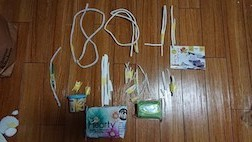
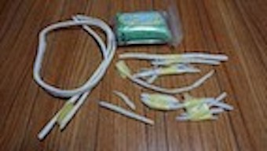
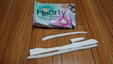
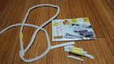
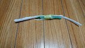
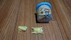

うどんを紐に見立てる
接着剤のイミテーション
接着剤を中力粉に混ぜ、見た目を重視したちぎれないうどんを目指す。

樹脂でつくるうどん
見た目より、ちぎれなさを考慮したうどんづくりを目指す。

1.樹脂粘土でつくる
〈試作〉1.手で伸ばす 2.うどんと同じ作り方をする 3.紐の長さで作る 4.紙粘土の周りにまく 5.タコ糸の周りにまく 6.ニスを塗る
〈考察〉ちぎれなさではダントツ。食品サンプルで使われているため一番オーソドックス。
しかし、紐の長さまで伸ばした時うどんと同じ製法で作るのが難しい。絵の具で色つけした時のひび割れが激しい。
見た目が遠くちぎれなさも微妙でどっちつかず。

2.紙粘土で作る
〈試作〉1.手で伸ばす 2.うどんと同じ作り方をする 3.樹脂粘土の軸にする
〈考察〉とても軽い。食品サンプル製作時には軸として使用されていた、強度が増し折れにくい。折れにくいのはいいが紐としては固すぎる。

3.食品用粘土で作る
〈試作〉1.手で伸ばす 2.うどんと同じ作り方をする 3.紐の長さで作る 4.ニスを塗る
〈考察〉見た目は一番近く絵の具との相性も良い。模型など動かさない前提での素材なのでパキッと折れてしまう。

4.グールガンで作る
〈試作〉1.型を作り流す 2.モールにつける
〈考察〉光沢があり、うどんぽくない。絵の具と混ぜれないため透明すぎる。

5.小麦粘土で作る
〈試作〉1.手で伸ばす 2.うどんと同じ作り方をする
〈考察〉素材にうどんと近い粉が使われている。少々硬いが硬さは紐に近い。発色が少し悪く絵の具と混ぜた時の粘土感がすごい。

うどんをそのまま通す
コンセプチュアルに寄り、実用性ではなく再現性を高める。

紐をうどんに見立てる
紐を茹でる
見た目は紐のままだが、他の特徴（食感、味）をうどんに近づける。
紐を食べる
うどんを食べる行為に着目し食文化と紐文化を融合させる。